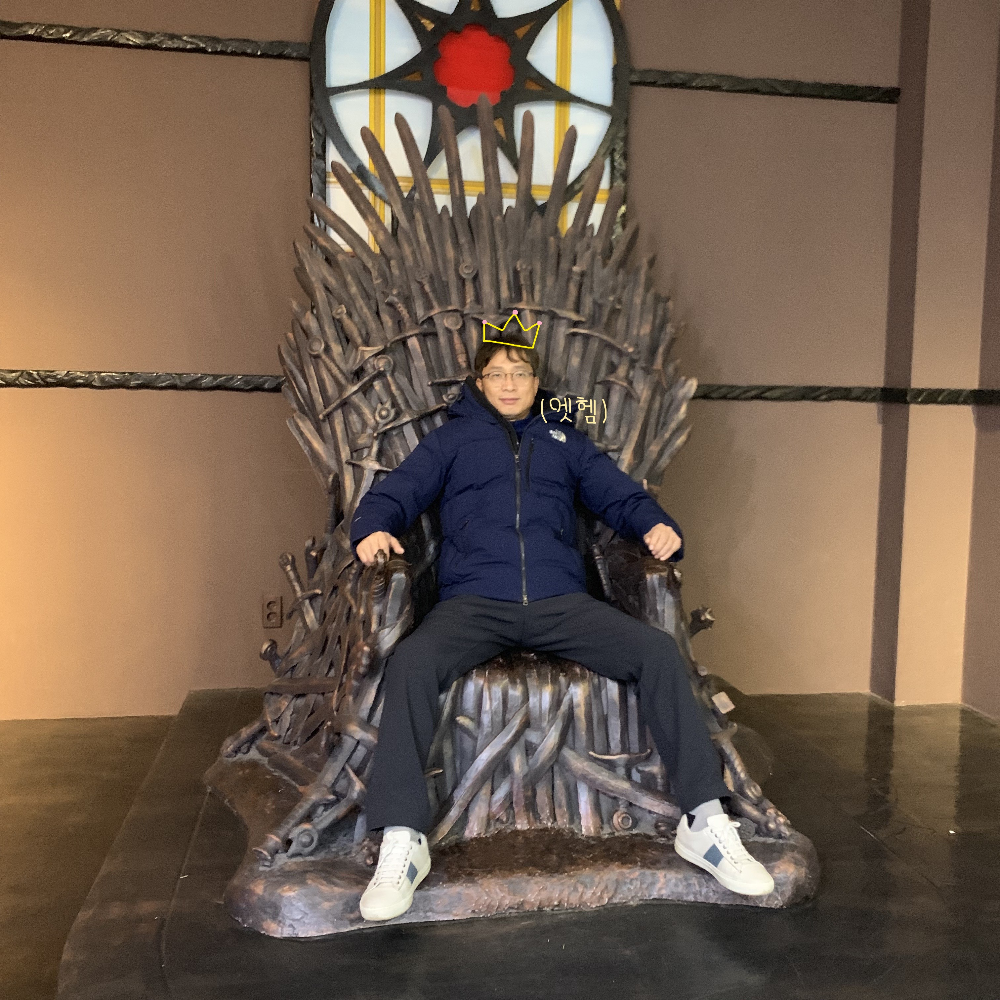
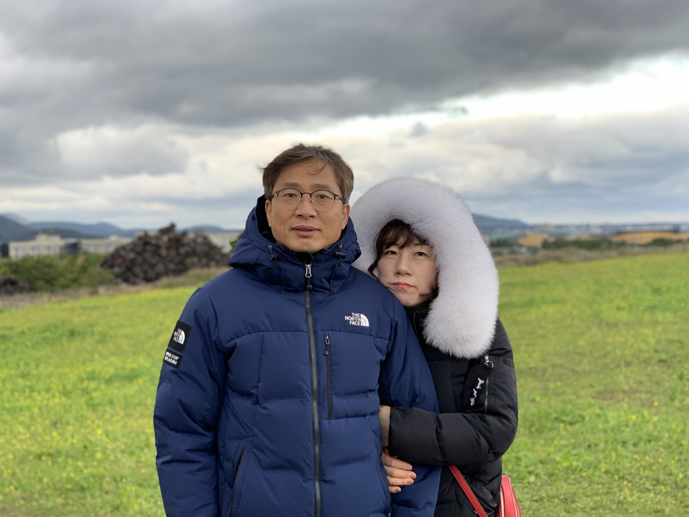
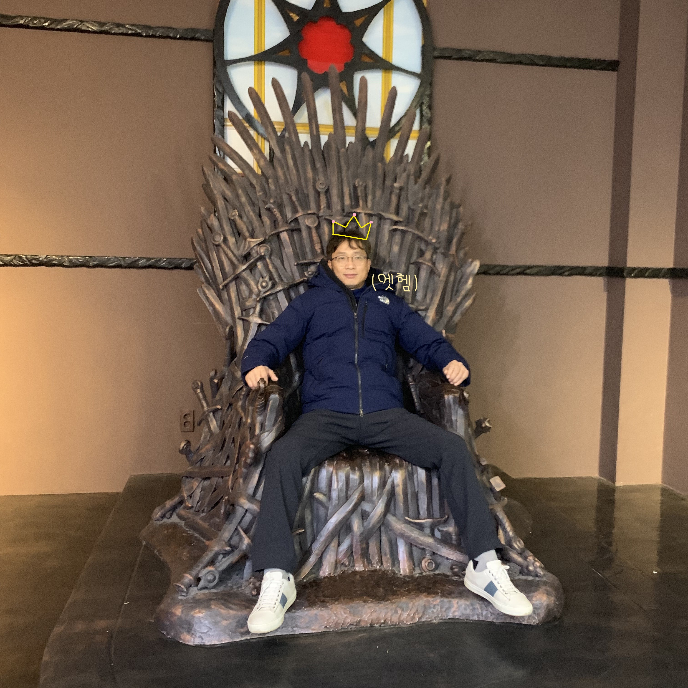
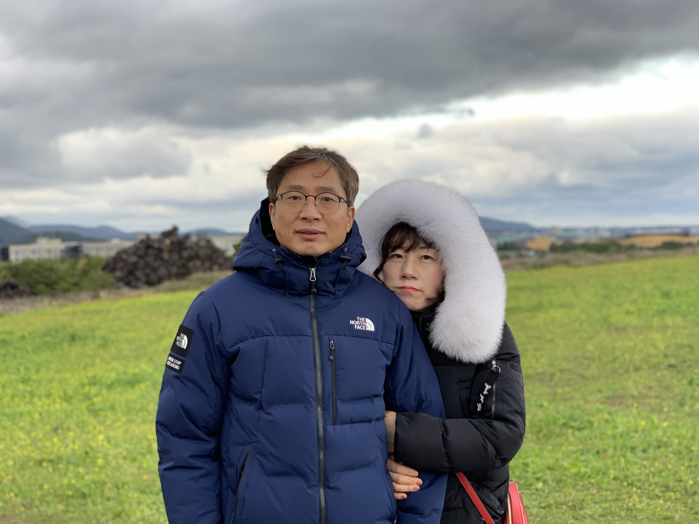

6. 재관의 투자자 시절


 



사실 재관의 투자 시작 시점은 명확하지 않다. 아마 필자가 고등학교에 입학한 2015년 이후일 것으로 추정되는데, 전적이 있는 탓에 은진에게 투자 사실을 밝히지 않은 채 재관은 '걱정만 하며 살지 않기' 위해 여러 매체를 통해 투자 공부를 하게 된다.
그렇게 주식 투자와 코인 투자를 이어가던 재관은 은진과 자녀들에게 투자 사실을 밝히며 수익을 공개하였고, 수익의 규모에 놀라면서도 특히 코인에 부정적이었던 은진과 자녀들은 반신반의하며 재관의 투자에 간섭하지 않는다.
재관의 투자가 성공적으로 이루어졌기 때문에 재관의 가족은 이전에 비해 보다 여유로운 생활을 할 수 있게 되었다. 재관 역시 투자가 성공하자 매우 신이 난 듯 했다. 그렇지만 필자는 때때로 경제적 여유와 재관을 바꾼 것이 아닌가, 하는 생각이 들기도 한다.
재관은 주식이나 코인의 오르내림에 민감하게 반응해야 하기 때문에 휴대폰에 시간을 쏟는 경우가 많고, 그러다 보면 자연히 가족과의 교류가 줄어들거나 늦은 시간까지 잠을 못 이루기도 한다. 은진은 재관이 너무 늦은 시간까지 어두운 거실에서 휴대폰을 보는 것에 우려를 표하기도 한다.
그럼에도 재관의 노력이 명백히 유의미했음은 누구도 부정할 수 없다. 재관 스스로도 투자를 과도한 업무로부터 벗어나 즐거움과 뿌듯함, 나아가 삶의 의미를 되찾을 수 있는 수단으로 여긴다면 더욱 좋겠지만 말이다.